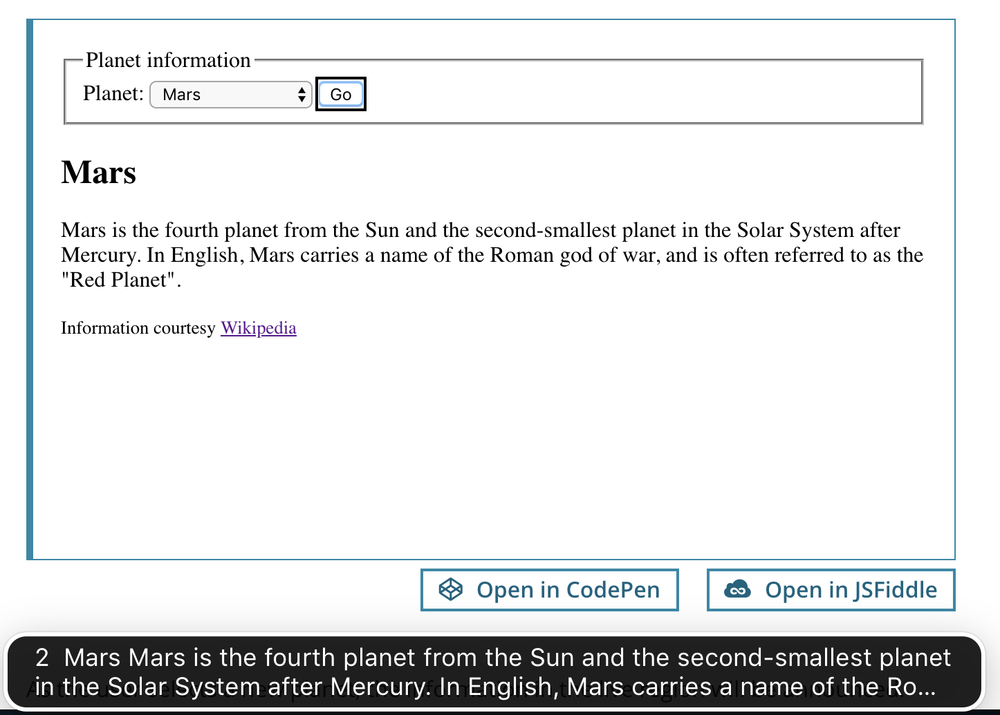

ARIA live regions
使用 JavaScript，我们可以动态更改页面的某些部分，而无需重新加载整个页面——例如，可以动态更新搜索结果列表，或者显示不需要用户交互的警告或通知。虽然这些更改对于能够看到页面的用户来说通常是显而易见的，但是对于残疾用户来说，它们可能并不明显。ARIA Live 区域填补了这个空白，并提供了一种以编程方式显现动态内容更改的方法，这种方式可以由残疾辅助技术提供提示。
备注： 辅助技术将播报实时区域内容的动态变化。必须首先显示活动区域（通常是空的），以便浏览器和辅助技术可以知道它。然后宣布任何后续更改。
在页面加载时的初始标记中简单地添加一个 aria-live 属性或者一个特殊的活动区域角色 ( role ) (例如 role="alert") 将不会起作用。
向文档中动态添加一个包含 aria-live 属性的元素或者特殊的角色 ( role ) 也不会导致辅助技术工具的任何播报（在那个时间点，浏览器/辅助技术工具还没有检测到活动区域）所以你不能监控它的变化)。
总是确保实时区域首先出现在文档中，然后再动态添加/更改任何内容。
只要在更改发生之前添加属性，就可以在要宣布更改的元素上包含 aria-live 属性或专门的活动区域角色（例如role =“ alert”）——在原始标记中或动态地使用 JavaScript。
简单的活动区域
在不重新加载页面的情况下更新的动态内容通常是区域或窗口小部件。非交互式的简单内容更改应标记为实时区域。以下是每个相关的 ARIA 活动区域属性的列表，并带有说明。
aria-live:aria-live=POLITENESS_SETTING被用来设置屏幕阅读器对待活动区域更新的优先级 - 可能的设置：off,politeorassertive。默认设置是off。这个设置是到目前为止最重要的。aria-controls:aria-controls=[IDLIST]被用来将控制动作与它控制的区域相关联。区域就像div里面的id被鉴别；多区域可以被一个带空格的控制动作关联，例如：aria-controls="myRegionID1 myRegionsID2"。警告： 尚不知道在当前的辅助技术工具中是否实现了实时区域的 ARIA 控制方面。需要研究。
正常来说，只有 aria-live="polite" 被使用。任何对用户来说很重要但又不至于令人讨厌的更新的区域都应该被设置此属性。每当用户空闲时，屏幕阅读器都会说出更改。
对于不重要的区域或由于快速更新或其他原因而烦人的区域，请使用 aria-live="off" 将其静音。
让下拉框更新有用的屏幕信息
一个专门提供有关行星信息的网站提供了一个下拉框。从下拉列表中选择一个行星时，页面上的区域会更新有关所选行星的信息。
HTML
<fieldset>
<legend>Planet information</legend>
<label for="planetsSelect">Planet:</label>
<select id="planetsSelect" aria-controls="planetInfo">
<option value="">Select a planet…</option>
<option value="mercury">Mercury</option>
<option value="venus">Venus</option>
<option value="earth">Earth</option>
<option value="mars">Mars</option>
</select>
<button id="renderPlanetInfoButton">Go</button>
</fieldset>
<div role="region" id="planetInfo" aria-live="polite">
<h2 id="planetTitle">No planet selected</h2>
<p id="planetDescription">Select a planet to view its description</p>
</div>
<p><small>Information courtesy <a href="https://en.wikipedia.org/wiki/Solar_System#Inner_Solar_System">Wikipedia</a></small></p>
JavaScript
const PLANETS_INFO = {
mercury: {
title: 'Mercury',
description: 'Mercury is the smallest and innermost planet in the Solar System. It is named after the Roman deity Mercury, the messenger to the gods.'
},
venus: {
title: "Venus",
description: 'Venus is the second planet from the Sun. It is named after the Roman goddess of love and beauty.'
},
earth: {
title: "Earth",
description: 'Earth is the third planet from the Sun and the only object in the Universe known to harbor life.'
},
mars: {
title: "Mars",
description: 'Mars is the fourth planet from the Sun and the second-smallest planet in the Solar System after Mercury. In English, Mars carries a name of the Roman god of war, and is often referred to as the "Red Planet".'
}
};
function renderPlanetInfo(planet) {
const planetTitle = document.querySelector('#planetTitle');
const planetDescription = document.querySelector('#planetDescription');
if (planet in PLANETS_INFO) {
planetTitle.textContent = PLANETS_INFO[planet].title;
planetDescription.textContent = PLANETS_INFO[planet].description;
} else {
planetTitle.textContent = 'No planet selected';
planetDescription.textContent = 'Select a planet to view its description';
}
}
const renderPlanetInfoButton = document.querySelector('#renderPlanetInfoButton');
renderPlanetInfoButton.addEventListener('click', event => {
const planetsSelect = document.querySelector('#planetsSelect');
const selectedPlanet = planetsSelect.options[planetsSelect.selectedIndex].value;
renderPlanetInfo(selectedPlanet);
});
当用户选择一个新的行星时，活动区域的信息会被播报。因为这个活动区域有 aria-live="polite" 属性，屏幕阅读器将会等待用户暂停后再播报更新。这样的话，在列表中向下滑动并选择其他星球将不会在实时区域中播报更新。仅会针对最终选择的星球播报实时区域的更新。
这是 Mac 上 VoiceOver 的屏幕截图，播报对实时区域的更新（通过字幕）： 
更好的专业活动区域角色
在以下众所周知的预定义情况下，最好使用提供的特定“活动区域角色”：
| 角色 | 描述 | 兼容性提示 |
|---|---|---|
| 日志 | 对话、错误、游戏或者其他类型的日志 | 为最大化兼容性，当你使用这个角色时，请加入额外的aria-live="polite" 参数。 |
| 状态 | 一个状态栏或者屏幕上提供持续更新某种状态的区域。屏幕阅读器用户有一个特殊的命令用来读取当前的状态。 | 为最大化兼容性，当你使用这个角色时，请加入额外的aria-live="polite" 参数。 |
| 警告 | 在屏幕上闪烁的错误或警告信息。警报对于向用户发出客户端验证通知特别重要。（待定：带有 ARIA 信息的 ARIA 表单教程链接） | 为最大化兼容性，当你使用这个角色时，请加入额外的aria-live="assertive" 参数。但是，同时添加 aria-live 和 role="alert" 会导致在 iOS 平台上出现 VoiceOver 的双重播报问题。 |
| 进度条 | 小部件和活动区域之间的混合体。将此参数与 aria-valuemin ， aria-valuenow 和aria-valuemax 结合使用。（待定：请在此处添加更多信息）。 |
|
| 选框 | 用于滚动文本，例如股票行情自动收录器。 | |
| 计时器 | 或任何类型的计时器或时钟，例如倒数计时器或秒表读数。 |
高级活动区域
（待定：有关操作系统 / 浏览器 / 辅助技术工具组合对单个属性的支持的更详细的信息）
JAWS 10.0 版中已添加对实时区域的常规支持。Windows Eyes 从 8.0 版开始支持“在 Microsoft Internet Explorer 和 Mozilla Firefox 的浏览模式之外使用”的实时区域。NVDA 早在 2008 年就为 Mozilla Firefox 添加了对实时区域的一些基本支持，并在 2010 年和 2014 年进行了改进。2015 年，还为 Internet Explorer（MSHTML）添加了基本支持。
Paciello Group 有一些 与活动区域支持状态有关的信息(2014)，Paul J. Adam 特别研究了对于 Aria-Atomic 与 Aria-Relevant 的支持。
aria-atomic:aria-atomic=BOOLEAN被用来设置屏幕阅读器是否应该总是将活动区域整个播报，即使区域中只有一部分内容改变。可能的值为false或者true。默认值为false。aria-relevant：aria-relevant=[LIST_OF_CHANGES]被用来设置哪些类型的改变与活动区域有关。可能的值由以下的一个或者更多组成：additions、removals、text、all。默认值是additions text。aria-labelledby:aria-labelledby=[IDLIST]被用来将一个区域与其标签关联起来，与 aria-control 类似，但将标签与区域关联。标签标识符间用空格隔开。aria-describedby:aria-describedby=[IDLIST]被用来将一个区域与其描述关联起来，与 aria-control 类似，但将标签与描述关联。描述标识符间用空格隔开。
高级用例：时钟
为了举例说明 aria-atomic ，请考虑一个带有简单时钟的站点，其中显示了小时和分钟。时钟每分钟更新一次，而新的剩余时间仅会覆盖当前内容。
<div id="clock" role="timer" aria-live="polite"></div>
/* basic JavaScript to update the clock */
setInterval(function() {
var now = new Date();
document.getElementById('clock').innerHTML = "Time: " + now.getHours() + ":" + ("0"+now.getMinutes()).substr(-2);
}, 60000);
该函数第一次执行时，将播报所添加字符串的全部。在随后的调用中，将仅播报内容与先前内容相比已更改的部分。例如，当时钟从“17:33”更改为“17:34”时，辅助技术工具将仅播报“4”，这对用户不是很有用。
解决此问题的一种方法是，首先清除活动区域的内容，然后注入新内容。但是，有时这可能不可靠，因为这取决于这两个更新的确切时间。
aria-atomic="true" 确保每次更新实时区域时，全部内容都会被完整播报 (例如 "时间：17:34").
<div id="clock" role="timer" aria-live="polite" aria-atomic="true"></div>
备注： 正如我们观察到的那样，重新设置/更新 innerHTML 会导致整个文本被重新播报，无论你是否设置 aria-atomic="true" ，所以以上的时钟示例并不能像预期那样地工作。
一个简单的年份控件的工作示例，可以帮助您更好地理解：
<div id="date-input">
<label>Year:
<input type="text" id="year" value="1990" onblur="change(event)"/>
</label>
</div>
<div id="date-output" aria-live="polite">
The set year is:
<span id="year-output">1990</span>
</div>
function change(event) {
var yearOut = document.getElementById("year-output");
switch (event.target.id) {
case "year":
yearOut.innerHTML = event.target.value;
break;
default:
return;
}
};
如果没有 aria-atomic="true" ，屏幕阅读器只会播报"年"的数值的改变。
如果有 aria-atomic-="true" ，屏幕阅读器会播报"设置的年为：改变的值"。
高级用例：名册
一个聊天站点想要显示当前登录用户的列表。列表将动态反映用户的登录和注销状态的用户（无需重新加载页面）。
<ul id="roster" aria-live="polite" aria-relevant="additions removals">
<!-- use JavaScript to add remove users here-->
</ul>
ARIA 活动属性的细分：
aria-live="polite"指示屏幕阅读器应该等到用户空闲后再播报更新。这是最常用的值，因为用“assertive”值会打扰用户，打断他们的操作流程。aria-atomic没有设置 (默认为false) ，这样就只能说出添加或删除的用户，而不是整个名单。aria-relevant="additions removals"确保在在线名册中添加用户与移除用户的时候都会被播报。